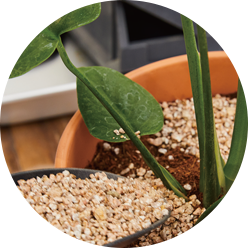
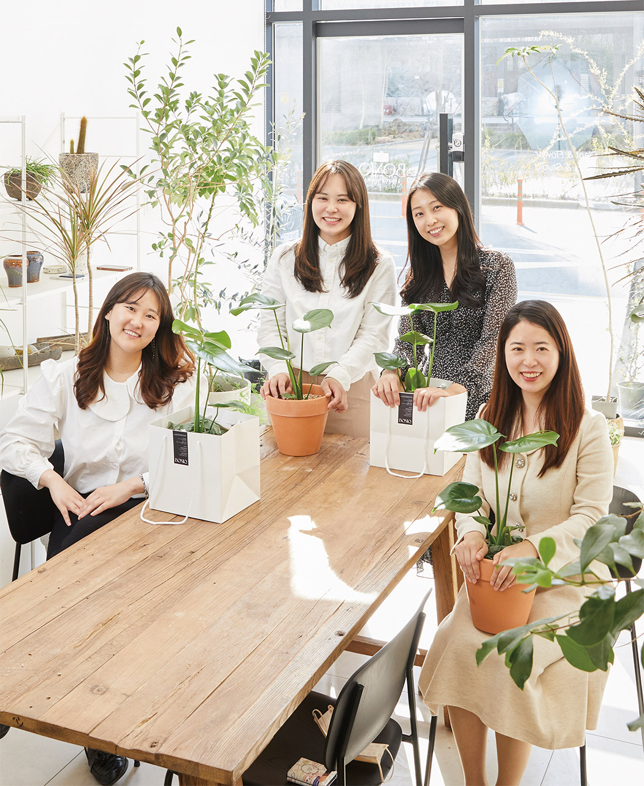
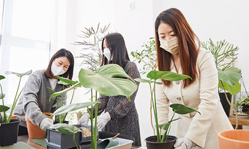
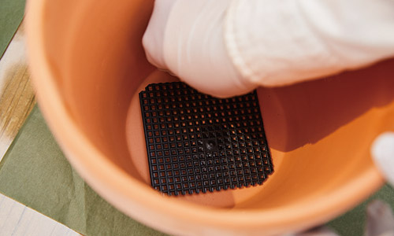
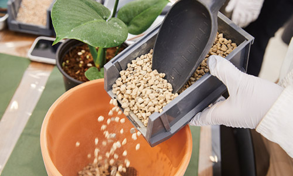
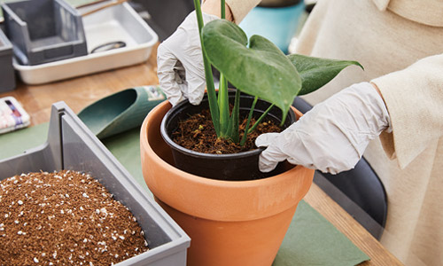
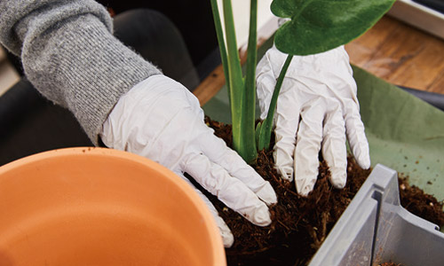
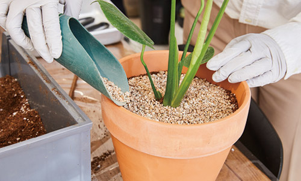
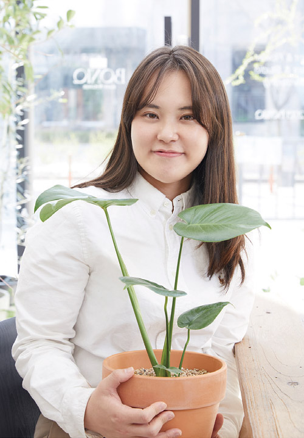
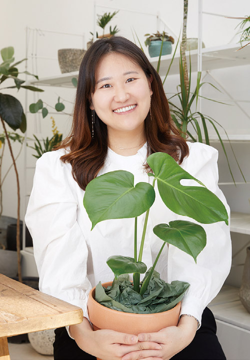

반려식물에게도 사랑이 필요해요
본사 직원들의 ‘가드닝 클래스’ 체험

코로나19로 외출이 어려워지면서 반려식물에 대한 관심도 늘어났다. 공기를 정화하고, 심신을 편안하게 만들어주는 반려식물. 식물이 잘 자랄 수 있도록 좋은 환경을 만드는 건 ‘식집사’의 몫이다. 봄을 맞아 반려식물을 데려오기로 결심한 KOMSA 직원들과 가드닝 클래스를 함께했다. 일상 속 즐거움을 발견하고, 편안한 소통까지 더한 의미 있는 시간을 공개한다.
Text. 최미혜 Photo. 고인순 Place. 보닉 세종점(BONIQ_SEJONG)

트렌치 코트 4인방의 특별한 수업
이제 완연한 봄이다. 아침저녁으로 서늘한 바람이 불긴 하지만, 한낮에는 따뜻한 햇살이 스며드는 요즘, 본사 직원들이 특별한 체험에 나섰다. 바로 가드닝 클래스다. 가드닝 클래스는 식물을 키우는 데 필요한 기본적인 요소를 배우는 수업으로 이론과 실습을 동시에 진행한다. 최근에는 반려식물을 키우는 인구가 늘면서 더욱 각광받고 있다. 마치 미리 짠 듯 아이보리 컬러 트렌치 코트를 맞춰 입은 KOMSA 직원 네 명이 클래스 장소에 나타났다. 교통안전평가실 임미선 주임과 해양사고예방실 허윤숙 주임, 그리고 교통안전정책실 김지아 주임과 운영지원실 재무회계팀 양지원 주임은 각각 입사 동기라고 한다. 어쩌다 보니 입사 동기 두 팀의 만남이 된 오늘의 클래스, 잘 할 수 있을까? 어색함도 잠시, “어머, 어떻게 이렇게 옷을 맞춰 입었죠?”라는 양지원 주임의 말에 한바탕 웃음이 터졌고, 본격적인 수업이 시작됐다.
이날 수업은 초보자를 위한 과정으로 반려식물로써 인기를 끌고 있는 몬스테라를 다뤘다. “몬스테라는 식물의 잎과 수형을 감상하는 관엽식물이에요. 열대지역이 원산지인데요. 예쁘고 큰 잎사귀를 갖고 있어 많은 분들이 찾죠. 관엽식물은 일주일 혹은 보름에 한 번 물을 주면 되기 때문에 키우기도 쉬워요.” 클래스의 강사로 나선 보닉 세종점 대표의 설명에 모두가 고개를 끄덕였다.
식물을 키울 때 가장 중요한 것은 흙과 햇빛, 통풍, 물, 온도다. 특히 주의할 것은 햇빛. 아무리 열대지역이 원산지인 식물이라도 직사광선은 좋아하지 않기 때문에, 식물의 건강을 위해서는 은은한 빛을 쬐어야 한다. 이후 몬스테라의 성장조건과 식재방법 등에 대한 설명이 이어지자 네 명의 본사 직원들은 두 눈을 반짝이며 점점 더 수업에 집중했다.
직렬은 달라도 우리는 KOMSA인!
드디어 몬스테라를 직접 만날 시간이다. 테이블 위에는 몬스테라의 새로운 보금자리가 될 화분과 배수망, 흙, 난석, 마사토가 준비됐다. 아크릴 장갑을 끼고 설레는 마음으로 실습 시작! 모두에게 처음인 이 시간, 직원들은 여러 도구를 나눠 쓰면서 화기애애한 분위기를 이어갔다. 식물의 잎보기 위치를 정하는 것에서부터 화분에 옮기기까지 모든 과정에 정성을 다하다 보니 어느새 훌쩍 시간이 지나갔다.
클래스의 마지막 순서는 이파리 닦기다. 식물은 잎을 통해 광합성을 하고, 숨을 쉬기 때문에 주기적으로 이파리를 닦아줘야 한다. 몬스테라의 경우, 2주 혹은 한 달에 한 번 정도 잎을 닦아주면, 잎이 더 튼튼해지고, 푸릇푸릇하게 자란다. 정성스럽게 이파리를 닦던 김지아 주임이 “구멍이 있는 잎과 없는 잎이 있는데, 무슨 차이가 있을까요?”라고 묻자 생각지도 못한 답변이 나왔다. 넓은 잎을 가진 몬스테라는 아래에 있는 잎까지 골고루 햇빛을 받을 수 있도록 상대적으로 위에 달린 잎에 구멍이 생긴다는 것. 서로를 배려해 성장한 결과다. 네 명의 직원들은 정말 신기하다며 짧은 탄성을 터뜨렸고, 더욱 정성스럽게 이파리를 닦았다. 허윤숙 주임이 “어떻게 닦았길래 그렇게 이파리가 깨끗해?”라고 묻자, 임미선 주임은 직접 이파리 닦기 시범을 선보였다. 이파리의 구석구석을 닦느라 집중한 직원들에게 “먼지만 닦아낸다고 생각하세요”라고 강사가 말하자, 다시 한번 웃음이 터졌다.
가드닝 클래스를 함께하며 서로에 대해 조금씩 알아간 본사 직원들. 봄 내음 가득한 공간에서 대화를 나누다 보니 빠르게 시간이 흘러갔다. 실장님의 추천으로 클래스에 지원했다는 양지원 주임은 “다른 직렬 분들과 자유롭게 대화할 수 있어 좋았어요. 평소 제가 식물을 키우면 다 죽었었는데, 제대로 된 방법을 알게 되어 보람 있네요”라며 소감을 밝혔다. 김지아 주임은 “수업 내내 즐거웠어요. 몬스테라 잎에 구멍이 있는 이유도 흥미로웠고요”라고 말하며, 두고두고 기억할 특별한 경험이라고 전했다. 가드닝 클래스에 대해 처음 알게 됐다는 허윤숙 주임은 “동료들과 친해지고 싶어 지원했어요. 서로 도와가며 체험하니 더 재미있고요. 오늘 사진 촬영한 것도 좋은 경험이었어요”라며 반려식물 동호회를 만드는 것도 좋겠다는 의견을 냈다. 마지막으로 임미선 주임은 “타 직렬과 얘기를 나눌 수 있는 좋은 기회였어요. 이렇게 식물을 직접 심어본 건 처음인데, 통풍이나 물주기 등 세세한 내용을 알게 되어 인상 깊었어요”라면서, 서로의 성장을 배려하는 몬스테라처럼 상대방을 배려하는 KOMSA 직원이 되길 바란다고 전했다. 직렬도 팀도 다르지만 ‘반려식물’이라는 공통분모를 나눠 갖게 된 네 사람, 이 특별한 인연이 꾸준히 이어지길 기대해본다.
다른 직렬 분들과 자유롭게 대화할 수 있어 좋았어요. 평소 제가 식물을 키우면 다 죽었었는데, 제대로 된 방법을 알게 되어 보람 있네요.
몬스테라 화분 갈이, 어렵지 않아요

01잎보기 위치 정하기
본인의 기준에서 가장 예뻐 보이는 방향으로 식물을 놓는다.

02화분에 배수망 깔기
화분 구멍에 맞게 배수망의 모서리를 잘라 바닥에 끼운다.

03화분의 제일 아래층에 난석 깔기
통풍과 배수에 좋은 난석을 화분 바닥에 골고루 뿌려준다.

04배합토 깔기
포트(농장에서 주는 검은 화분)에 담긴 몬스테라를 화분에 넣고 잎보기를 할 높이를 정한 다음 배합토를 깐다. 손끝으로 흙을 다져 빈 곳이 없도록 할 것.

05새 화분에 옮기기
한 손은 몬스테라의 가장 단단한 부분을 잡고, 다른 손으로 포트를 살짝 주물러 몬스테라를 뺀 다음, 흙의 상태와 벌레 유무를 확인해 새 화분에 옮긴다. 뿌리가 흔들리지 않을 정도로 흙을 잘 눌러준다.

06마사토로 덮기
흙이 보이지 않도록 마사토로 덮어 평평하게 마무리한다.

교통안전평가실
임미선 주임
운영지원실 재무회계팀
양지원 주임
 교통안전정책실
교통안전정책실
김지아 주임

해양사고예방실
허윤숙 주임